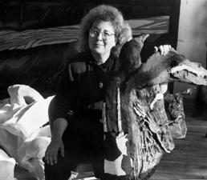

- 
Background
Born in New York City.
Graduate of Cooper Union Art School
Home | Boston, Ma
Summer | Harpswell, Me
Honors
Founding Member of ARC,
Women's Gallery, Chicago
-
Recent Shows
2009 to 2011 | Group Shows
Chicago
2010 | Two Person Show
New England BIOLABS
with Ruth Mordecai Slavet
2004 | 30th Anniversary Show
ARC Gallery
Chicago
Fellowship
Bunting Institute, Radcliff College.
July 1988 to June 1989.
Publications
Chapter on Maternal Mourning
with May Stevens,
Bodies of Knowledge:
Feminist Art and the Maternal
by Andrea Liss
-
Exhibits
1996 | Sculpture Exhibit
Maine Coast Artists
Rockport Maine
1995 | Cast of Six
Lamont Gallery
Phillips Exeter Academy
1994 |
Navon Gallery
Neve-Ilan, Israel
1994 | Place
Illinois State Museum
Chicago
1993 | Cast of Seven
Art Complex Museum
Duxbury, Ma
1991 | Crossings
DeCordiva Mueum
Duxbury, Ma
-
1990 | Night Journeys of the Second Year
Arc Gallery
Chicago
1989 | Solo Exhibition
Bunting Institute
Radcliff College
1989 | Tangible Choices
Five Sculptors at Work.
Rose Art Gallery
Boston
More Exhibits
Chicago Cultural Center
NAME Gallery
Ukranian Museum of Art
Hyde Park Art Center
Printers Row | Chicago Artists
Navy Pier: Chicago Perspectus
Artemesia International | Chicago
Zriny Hays Gallery